DUT Board Design: DPS Decoupling Guidelines
Rick Crist, Verigy
Paper ID: 105488
Abstract
When designing a DUT board, DPS decoupling is one of those things that is not thought about much. However, noise caused by improper or inadequate decoupling can introduce measurement error, reduce the operating frequency of the device and even cause functional failures.
The paper will discuss capacitor technology, types of capacitors and provide guidelines for selecting capacitors for different applications. The paper will also cover DUT board layout including capacitor placement, power and ground planes, stack-up and sense line routing.
Introduction
When a CMOS device transitions from a static to an active state, there is usually a sudden demand for significant additional current. For automated test equipment (ATE), the device power supply (DPS) is usually unable to respond quickly enough to meet the demand. As a result, the power supply voltage will drop below the programmed level until the DPS can respond.
When the device transitions from an active to a static state, the reverse occurs, with the device suddenly requiring significantly less current. Here again, the DPS is unable to respond quickly enough to this change and as a result the voltage will spike above the programmed level. This is sometimes referred to as "kick".
During device operation, significant portions of the device may become active or inactive, such as when the device transitions from one mode to another. This can result in changes in current requirements similar to those described for startup or shutdown.
Decoupling capacitors are used to even out voltage transients and to reduce noise on the device under test (DUT) board. This paper will discuss some of the aspects of capacitor technology including capacitance value, voltage rating, operating temperature, leakage current, equivalent series resistance, equivalent series inductance, package types and sizes. It also will review the types of capacitors typically used for DPS decoupling applications.
After selecting the appropriate capacitors, their placement on the DUT board is another important consideration to keep voltage transients and noise low.
In addition to the decoupling capacitors, other DUT board design aspects, such as power and ground plane layout, board stack-up and DPS sense line routing affect power supply performance.
Capacitor Technology
A capacitor is an electrical device that can store energy in the electric field between a pair of closely spaced conductors (called 'plates'). When current is applied to the capacitor, electric charges of equal magnitude, but opposite polarity, build up on each plate [1]. The following sections describe some of common capacitor characteristics and specifications.
Capacitance Value
The capacitor's capacitance (C) is a measure of the amount of charge (Q) stored on each plate for a given potential difference or voltage (V) which appears between the plates:
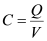
A capacitor has a capacitance of one farad when one coulomb of charge is stored due to one volt applied potential difference across the plates. Since the farad is a very large unit, values of capacitors are usually expressed in micro-farads (µF or 1e-6), or pico-farads (pF of 1e-12) [1]. In addition to the capacitance value, an accuracy percentage is usually specified. The accuracy percentage is how much the capacitor is likely to deviate from its specified capacitance.
Voltage Rating
The maximum or rated voltage is the maximum DC voltage or peak AC voltage that can be applied continuously to the capacitor at the rated temperature. Exceeding the rated voltage can cause capacitor failure or may increase leakage current.
Operating Temperature
The maximum or rated temperature is the maximum temperature that the capacitor can operate in. Exceeding the rated temperature can cause capacitor failure or may increase leakage current. Ceramic capacitors tend to vary their capacitance with temperature.
Leakage Current
The behavior of a capacitor under DC conditions can be represented as follows:
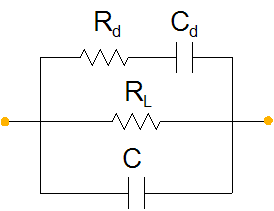
Where:
RL - Capacitor Leakage Resistance. It can reach 50,000 mega-ohms in a tantalum capacitor. For ceramic capacitors it can exceed 1012 ohms.
Rd - The dielectric loss contributed by dielectric absorption and molecular polarization.
Cd - The inherent dielectric absorption. For a solid tantalum capacitor it typically equates to 1-2% of the applied voltage.
When a DC voltage is applied to a capacitor, the leakage current is the residual current that passes through the capacitor after charging is complete. Leakage current is an indication of the dielectric quality, and therefore of the capacitor and its reliability.
Equivalent Series Resistance
The behavior of a capacitor under AC conditions can be represented by the following simple diagram [2]:
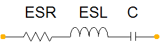
The Equivalent Series Resistance (ESR) represents the resistance loss in the dielectric and terminals. To understand the effects of ESR on voltage regulation, the following model can be used:
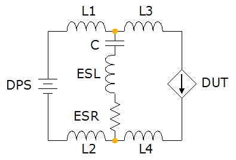
Where:
DPS - Supply voltage.
C - Capacitor capacitance.
ESL - Capacitor Equivalent Series Inductance.
ESR - Capacitor Equivalent Series Resistance.
L1 & L2 - Line inductance from DPS to capacitor on the DUT board.
L3 & L4 - Line inductance from the capacitor to the DUT.
In this example, the DUT is modeled as a simple current sink. The DUT current profile is shown in Figure 4:
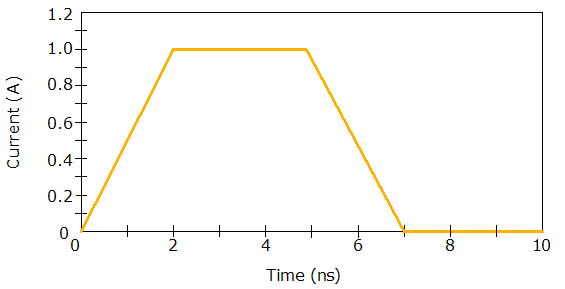
The current step is at a rate of 0.5A/ns. For an ideal 10 μF decoupling capacitor, the resulting voltage ripple is shown in Figure 5:

As can be seen, the voltage droops about 25 mV (2.5%) below and spikes about 25 mV (2.5%) above the programmed level of 1.0V.
Using the same setup and adding 0.01, 0.1, and 1.0 Ohms of ESR yields the ripple voltage shown in Figure 6:
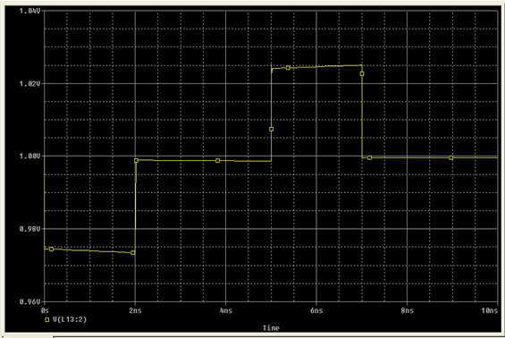
Where:
Yellow - 0.01 Ohms.
Red - 0.1 Ohms
Green - 1.0 Ohms
As can be seen, the voltage now droops about 120 mV (12.0%) below and spikes about 120 mV (12.0%) above the programmed level of 1.0V with an ESR of 1.0 Ohms.
Equivalent Series Inductance
The Equivalent Series Inductance (ESL) represents the mechanical inductance of the connections. Using the setup from the discussion on ESR, the same capacitor with 0.01 Ohms of ESR and 10, 100 and 1000 pH of ESL yields the ripple voltage shown in Figure 7:
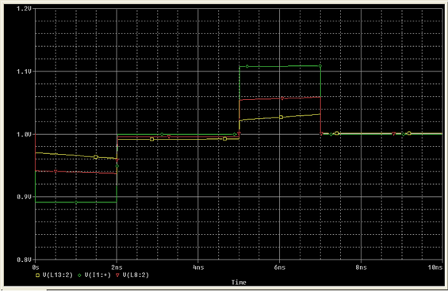
Where:
Yellow - 10 pH.
Red - 100 pH
Green - 1000 pH
As can be seen, the voltage now droops about 110 mV (11.0%) below and spikes about 110 mV (11.0%) above the programmed level of 1.0V with an ESL of 1000 pH.
Package Type and Size
Capacitors come in leaded, either axial or radial, or non-leaded, surface mount technology (SMT) packages. The sizes of Multi-Layer Ceramic Chip (MLCC) capacitors are defined by an EIA code number. Common sizes are given in the table below:
EIA Code |
Length |
Width |
Height |
|---|---|---|---|
0402 |
1.00 mm |
0.50 mm |
0.20 mm |
0603 |
1.60 mm |
0.80 mm |
0.30 mm |
0805 |
2.00 mm |
1.25 mm |
0.50 mm |
1206 |
3.20 mm |
1.60 mm |
0.60 mm |
1210 |
3.20 mm |
2.50 mm |
0.60 mm |
Case sizes for SMT tantalum capacitors also use an EIA code number, although a code letter is often used. Common sizes are given in the table below:
EIA Code |
Code |
Length |
Width |
Height |
|---|---|---|---|---|
3216-18 |
A |
3.20 mm |
1.60 mm |
1.60 mm |
3528-21 |
B |
3.50 mm |
2.80 mm |
1.90 mm |
6032-28 |
C |
6.00 mm |
3.20 mm |
2.60 mm |
7343-31 |
D |
7.30 mm |
4.30 mm |
2.90 mm |
7343-43 |
E |
7.30 mm |
3.20 mm |
4.10 mm |
2012-15 |
P |
2.05 mm |
1.35 mm |
1.50 mm |
2012-12 |
R |
2.05 mm |
1.30 mm |
1.20 mm |
3216-12 |
S |
3.20 mm |
1.60 mm |
1.20 mm |
3528-12 |
T |
3.50 mm |
2.80 mm |
1.20 mm |
7361-38 |
V |
7.30 mm |
6.10 mm |
3.45 mm |
6032-15 |
W |
6.00 mm |
3.20 mm |
1.50 mm |
7343-15 |
X |
7.30 mm |
4.30 mm |
1.50 mm |
7343-20 |
X |
7.30 mm |
4.30 mm |
2.00 mm |
Case sizes for SMT electrolytic capacitors use a letter code. Common sizes are given in the table below:
Code |
Diameter |
Height |
|---|---|---|
B |
4.00 mm |
5.80 mm |
C |
5.00 mm |
5.80 mm |
D |
6.30 mm |
5.80 mm |
D8 |
6.30 mm |
7.70 mm |
E |
8.00 mm |
6.20 mm |
F |
8.00 mm |
10.2 mm |
G |
10.0 mm |
10.2 mm |
Types of Capacitors
The types of capacitors typically used for DPS decoupling applications are ceramic, electrolytic and tantalum.
Ceramic
Ceramic capacitors are non-polarized. They are made of alternating layers of metal and ceramic. Ceramic capacitors have low ESR and low ESL, especially for surface mount technology (SMT) components. The trade-off is that ceramic capacitors are only available in low capacitance values compared with their electrolytic or tantalum counterparts. The typical capacitance range is from 0.5 pF to 22 μF with a typical voltage range from 6.3 volts to 50 volts.
There are two classes of ceramic dielectrics:
Class 1:
Also known as temperature compensating capacitors; they are usually made from mixtures of titanates where barium titanate is normally not a major part of the mix. These are the most stable type of capacitor available.
Class 2:
These dielectrics are typically are based on the chemistry of barium titanate and provide a wide range of capacitance values and temperature stability.
The Electronic Industries Alliance (EIA) developed the following three letter code for class 1 dielectrics [3]:
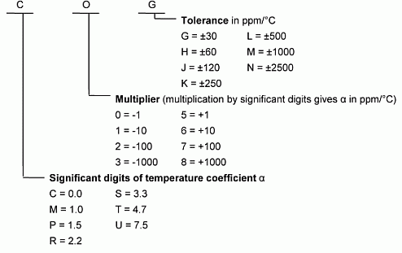
The temperature characteristic "NPO" covers "COG".
The EIA three letter code for class 2 dielectrics is [3]:
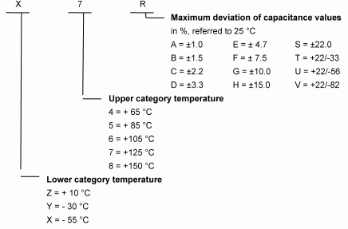
Tantalum
Tantalum electrolytic capacitors are polarized. The chemical structure of the capacitor allows for maximum power dissipation correlated with RMS current. The advantage of tantalum capacitors is their volumetric efficiency compared with aluminum electrolytic capacitors. Surface mounted capacitors are better than leaded capacitors. The typical capacitance range is from 1 μF to 330 μF with a typical voltage range from 5 volts to 50 volts.
Electrolytic
Aluminum electrolytic capacitors are polarized. The chemical structure of the capacitor allows for maximum power dissipation correlated with RMS current. Aluminum electrolytic capacitors have higher ESR and DC current leakage than tantalum capacitors. The typical capacitance range is from 3.3 μF to over 1000 μF with a typical voltage range from 6.3 to 50 volts for surface mounted capacitors.
Capacitor Selection
Capacitors are connected in parallel with the device power supply to shunt away and conceal current fluctuations from the power source to provide a "clean" power supply.
Capacitance Values
At the beginning of a functional test, when the DUT transitions from a static to an active state, it creates a sudden demand for current. It takes time for a DPS to react to this change. Without bypass capacitors to temporarily provide the additional current, the supply voltage will drop until the DPS can catch up. Too much drop will cause the DUT to malfunction.
At the end of a functional test, when the DUT transitions from an active to a static state, the demand for current suddenly decreases. Without bypass capacitors to temporarily absorb the additional current, the supply voltage will increase until the DPS can catch up. This is called "kick". Too much kick can damage the DUT.
The amount of voltage variation the DUT can tolerate varies with the design and the supply voltage. A DUT utilizing a 1 V core supply may be able to tolerate 5% of voltage variation, or 50 mV.
The role of bypass capacitors is to regulate the supply voltage by providing or absorbing current until the DPS can respond. The following equation can be used to approximate the amount of bypass capacitance needed for a particular application:
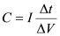
Where I is the current step, ΔV is the maximum allowable voltage variation and Δt is the length of time it takes the DPS to respond. For example: if a device produces a current step of 2 A, the maximum voltage transient desired is 50 mV and the DPS requires 5 us to respond, then the required bypass capacitance is 200 μF.
Device power supply noise consists of a variety of frequency components that cannot all be filtered with a single capacitor. Larger value capacitors are used to smooth the low frequency voltage transitions discussed above. To filter higher frequency noise, smaller value capacitors are needed. In a typical application, a combination of multiple 1 μF and 0.1 μF capacitors are used in parallel with the larger capacitors.
Type
The choice of larger value capacitors is usually determined by the amount of capacitance needed for the application.
Capacitance |
Type |
|---|---|
< 10 μF |
Ceramic |
10 μF - 200 μF |
Tantalum |
> 200 μF |
Electrolytic |
Ceramic capacitors should be used for the smaller values (i.e. < 10 μF).
In order to reduce ESR, one trick is to use several smaller value capacitors in parallel, instead of one large capacitor. For example: if 100 μF of capacitance is needed, it may be better to use ten 10 μF capacitors in parallel rather than one 100 μF tantalum capacitor.
Voltage Rating
The power supply requirements for modern DUTs are usually well below the voltage rating for most decoupling capacitors. Higher value capacitors in small case sizes have the lowest rated voltage, which can be as low as 6.3 V.
Temperature
If the DUT will be tested at different temperatures, other than ambient, this must be considered when selecting capacitors. Decoupling capacitors are usually placed on the bottom of the DUT board. Here, they can be somewhat isolated from temperatures in the test environment on top of the board. Ceramic capacitors are often temperature sensitive, so choose them carefully.
Leakage
Leakage is negligible in ceramic capacitors, but may have to be considered when using tantalum or electrolytic capacitors, especially when the application requires measuring small quiescent currents (Iddq).
If it is necessary to select capacitors that have large leakage currents with respect to expected Iddq, it may be necessary to utilize a relay on the DUT board to isolate the leaky bulk capacitors when Iddq is measured.
ESR
In power supply decoupling applications, ESR must be as small as possible since it determines the loss power when the capacitor is used to smooth voltage. One way of lowering ESR is to install several smaller capacitors in parallel on the DUT board instead of one larger capacitor.
ESL
In power supply decoupling applications, ESL must be as small as possible. ESL can be reduced by using surface mount components and by paying attention to board layout, as discussed later in this paper.
Package Type and Size
For DPS decoupling applications on DUT boards, SMT packages are preferred for all capacitor types.
It is usually desirable to select capacitors in the smallest practical case size. Case size affects ESL; the smaller the case, the smaller the ESL.
Package dimensions can also affect ESL. For example, the ESL of a 1 μF, ceramic (X7R) capacitor in case size 1206 is 1.0 nH. The same capacitor in a reverse geometry case size of 0612 has an ESL of 0.12 nH.
Capacitors in smaller case sizes also make placement closer to the DUT easier.
Capacitor Placement
The following diagram is an example of decoupling capacitor placement for a DUT in a BGA package:
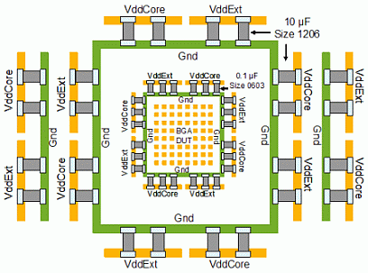
The example device has two power domains: VddCore and VddExt.
Capacitors should be placed close enough to the DUT so that inductance between the capacitor and the DUT is negligible.
The small, 0.1 μF capacitors should be placed closest to the device as shown. If the DUT ball spacing allows, capacitors can be soldered between power and ground ball pads. The 0402 size capacitors are useful for this.
The larger, 10 μF capacitors should be placed next, but still as close to the DUT as practical. Here, 12 10 μF capacitors for each power domain have been installed in parallel instead of using one 100 μF and two 10 μF capacitors.
Vias to the power and ground planes should be placed within the capacitor pads as shown below to minimize serial inductance:
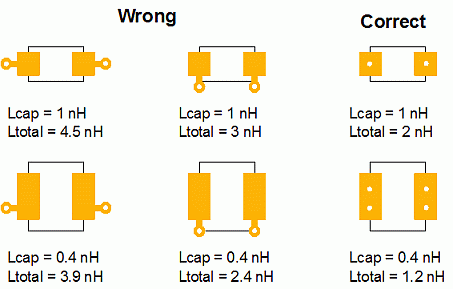
If possible, larger value capacitors should use two, or more, vias to the power and ground planes to minimize both inductance and resistance. Using power and ground bars, each with multiple vias, is a good choice. This design also makes it easier to make adjustments in the number of decoupling capacitors used on the DUT board.
Power and Ground Planes
The power and ground planes of the DUT board should be large continuous planes with a large area to reduce resistance and inductance and increase the capacitance between them. The power and ground planes must also be capable of meeting the current needs of the DUT.
High power devices with large ΔI/ ΔT require low inductance contacts to avoid problems caused by unwanted voltage variation due to the inductive ΔI/ ΔT effect of the interconnections. This is often referred to as ground bounce.
Power and ground planes should be interleaved to minimize the loop inductance of the power paths. An example board stack-up for the DUT in Figure 10 might be:
- Top
- Gnd
- Signal 1
- Gnd
- Signal 2
- Gnd
- Power 1 - VddCore
- Gnd
- Gnd
- Power 2 - VddExt
- Gnd
- Signal 3
- Gnd
- Signal 4
- Gnd
- Bottom
Two ground planes are used for layers eight and nine in order to keep the layer count even.
DPS Sense Lines
Each DPS has the following five connections:
- Force +
- Sense +
- Force -
- Sense -
- Guard
To achieve the best voltage accuracy, Force + and Sense + should be connected together as close to the device as possible. Likewise, Force - and Sense - should be connected together as close to the device as possible [5].
The Sense + and Sense - lines should be routed on a single layer. They should be routed in a similar path as if they were a differential signal. This will help reduce noise on these signals.
If it is necessary to make precision measurements of low power supply current, the Sense + and Sense - lines should be surrounded as much as possible with the guard line.
For the V93000 GPDPS, a 100 K Ohm resistor should be installed between Force - and the Guard line. This resistor prevents excessive voltage from building on the DPS by providing a path for any leakage current. [6].
Conclusion
Decoupling capacitors are used to even out voltage transients and to reduce noise on the DUT board. This paper has covered some of the aspects of capacitor technology including capacitance value, voltage rating, operating temperature, leakage current, equivalent series resistance, equivalent series inductance, package types and sizes. The paper also covered the types of capacitors typically used for DPS decoupling applications.
By following the guidelines outlined in this paper, a DUT board designer can select capacitors that will reduce voltage droop, kick and noise that could otherwise cause the DUT to malfunction, or even become damaged.
After capacitor selection, their placement on the DUT board is also an important consideration for optimal performance of the decoupling scheme.
In addition to decoupling capacitor selection and placement, other DUT board design aspects, such as power and ground plane layout, board stack-up and DPS sense line routing affect power supply performance.
A |
Current, represented in Amperes |
AC |
Alternating Current |
Anode |
Negative Electrode |
Amp |
Ampere |
Ampere |
The measure of electric current. One Ampere is equivalent to one coulomb of charge per second. |
ATE |
Automatic Test Equipment |
BGA |
Ball Grid Array |
C |
Capacitance, represented in Farads |
Cathode |
Positive Electrode |
CMOS |
Complementary Metal Oxide Semiconductor |
Coulomb |
The measure of electric charge. One coulomb is the amount of charge transported by a current of one ampere in one second. |
DC |
Direct Current |
Dielectric |
An electrical insulator |
DMM |
Digital Multimeter |
DPS |
Device Power Supply |
DPS32 |
DC Scale Device Power Supply |
DUT |
Device under Test |
DUT Board |
A printed circuit board (PCB) that provides the interface between the DUT and the ATE. The DUT interface is usually in the form of a socket. Also known as a DUT Board. |
EIA |
Electronic Industries Alliance |
ESL |
Equivalent Series Inductance |
ESR |
Equivalent Series Resistance |
Farad |
The measure of capacitance. One Farad is equivalent to one volt of potential difference results in a static charge of one coulomb |
HC-DPS |
High Current Device Power Supply (E7002C). This DPS has 1 channel, capable of supplying + 4V at up to 100A. |
Henry |
The measure of inductance. One Henry is the equivalent to one ampere per second with a resulting potential difference of one volt. |
HVDPS |
High Voltage Device Power Supply (E7002AB). This DPS has 4 channels, each capable of supplying + 22V at up to 1A. |
I |
Current, represented in Amperes |
Inductance |
The ratio of magnetic flux to the current |
GPDPS |
General Purpose Device Power Supply (E7002AA). This DPS has 4 channels, each capable of supplying +/- 8V at up to 8A. |
IC |
Integrated Circuit |
Iddq |
Quiescent Device Power Supply Current |
J |
Joule |
Joule |
The measure of energy. One Joule is equivalent to one Newton moving an object one meter along the direction of the force. Also known as a Newton-meter (N-m). |
L |
Inductance, represented in Henries |
DUT Board |
A printed circuit board (PCB) that provides the interface between the DUT and the ATE. The DUT interface is usually in the form of a socket. Also known as a DUT Board. |
MLCC |
Multi-Layer Ceramic Chip |
MS-DPS |
Multi-Site Device Power Supply (E9711A/B). This DPS has 8 channels, each capable of supplying +/- 8V at up to 4A. |
Newton |
The measure of force. One Newton is the amount of force required to accelerate a body with a mass of one kilogram at a rate of one meter per second squared. |
Ohm |
The measure of resistance. One Ohm is equivalent to... |
PCB |
Printed Circuit Board |
Adobe's Portable Document Format |
|
PPM |
Parts Per Million |
Q |
Charge, represented in coulombs |
SOC |
System-On-a-Chip |
SI |
International System of Units |
SMT |
Surface Mount Technology |
V |
Potential difference, or Voltage, represented in Volts |
Volt |
The measure of electric potential difference or electromotive force. One volt is equivalent to the potential difference across a conductor when a current of one ampere dissipates one watt of power. |
Watt |
The measure of power. One Watt is equivalent of one joule per second, or in electrical terms, one watt is equivalent to one volt of potential difference at a current of one ampere. |
Z |
Impedance |
References
[1] Wikipedia; Capacitor; http://en.wikipedia.org/wiki/Capacitor.
[2] Cain, Jeffrey; The Effects of ESR and ESL in Digital Decoupling Applications; AVX Technical Bulletin; 1997.
[3] EIA Standard 198-1-F-2002; Ceramic Dielectric Capacitors Classes I, II, III and IV - Part I: Characteristics and Requirements; 2002.
[4] Mallet, Jean Pascal; Loadboard Design: Decoupling Guidelines; NPTest Application Note; 2002.
[5] Luehman, Kent; Kelvin Connections A Technique to Improve Measurement Accuracy and Yield; VOICE Proceedings; 2006.
[6] Verigy V93000 DUT Board Design Guide; Rel. 6.3; 2008; pp. 155.
Author's Biography
Rick Crist has been in the semiconductor test industry for 24 years. Prior to joining Verigy, Rick was at Schlumberger Semiconductor Solutions (now part of LTX-Credence) where he held positions in Manufacturing, Field Service and Applications. Rick holds a B.S.E.E.T. degree from DeVry University in Columbus, OH.